Szörnyek
61 szörnyfajta. A „Vadászat” oszlop a szükséges Vadászat-szint, amit Kuno megbízásaival fejlesztesz. A békés állatok nem támadnak, amíg nem bántod őket.
| Név | Szint | Életerő | Max találat | Vadászat | Hol | Zsákmány | |
|---|---|---|---|---|---|---|---|
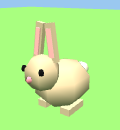 | Nyúl békés | 1 | 3 | 1 | – | Smaragd-völgy | Nyers hús 60% + csont, érme; 8+ szint: ritka tábla 1/48 |
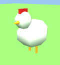 | Csirke békés | 1 | 3 | 1 | – | Port Sarim | Tyúktojás 60%, Toll 40% + csont, érme; 8+ szint: ritka tábla 1/48 |
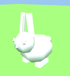 | Felhőnyúl békés | 2 | 4 | 1 | – | Felhőfok | Felhőesszencia 20% + csont, érme; 8+ szint: ritka tábla 1/48 |
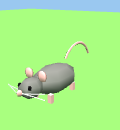 | Óriáspatkány | 2 | 5 | 1 | – | Port Sarim | – + csont, érme; 8+ szint: ritka tábla 1/48 |
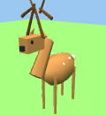 | Szarvas békés | 3 | 8 | 1 | – | Smaragd-völgy | Nyers hús 70%, Szarvasbőr 40% + csont, érme; 8+ szint: ritka tábla 1/48 |
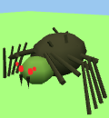 | Dzsungelpók | 4 | 8 | 2 | – | Karamja | Pókselyem 40%, Póktojás 20% + csont, érme; 8+ szint: ritka tábla 1/48 |
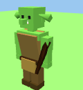 | Goblin | 5 | 10 | 2 | – | Port Sarim | Sör 25% + csont, érme; 8+ szint: ritka tábla 1/48 |
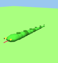 | Dzsungelkígyó | 5 | 10 | 3 | – | Karamja | Kígyóbőr 50% + csont, érme; 8+ szint: ritka tábla 1/48 |
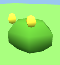 | Mocsári béka | 6 | 9 | 2 | – | Port Sarim | Gyógyfű 20% + csont, érme; 8+ szint: ritka tábla 1/48 |
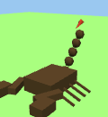 | Skorpió | 7 | 12 | 3 | – | Karamja | Skorpiófullánk 35% + csont, érme; 8+ szint: ritka tábla 1/48 |
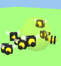 | Vadméh-raj mérgez | 8 | 12 | 2 | – | Smaragd-völgy | Méz 40% + csont, érme; 8+ szint: ritka tábla 1/48 |
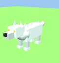 | Hófarkas | 8 | 14 | 3 | – | Zúzmara-fok | Farkasbőr 60% + csont, érme; 8+ szint: ritka tábla 1/48 |
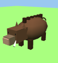 | Vadkan | 9 | 16 | 3 | – | Dzsungelvár | Farkasbőr 25% + csont, érme; 8+ szint: ritka tábla 1/48 |
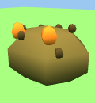 | Mocsári varangy | 10 | 16 | 3 | – | Holtláp | Varangyláb 50% + csont, érme; 8+ szint: ritka tábla 1/48 |
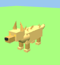 | Sakál | 10 | 16 | 3 | – | Homokfok | Tyúktojás 20% + csont, érme; 8+ szint: ritka tábla 1/48 |
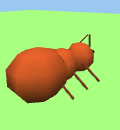 | Óriáshangya | 11 | 18 | 3 | – | Homokfok | Csont 30% + csont, érme; 8+ szint: ritka tábla 1/48 |
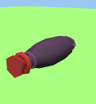 | Óriáspióca mérgez | 12 | 18 | 3 | – | Holtláp | Pióca 50% + csont, érme; 8+ szint: ritka tábla 1/48 |
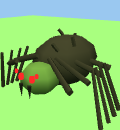 | Barlangi pók | 12 | 20 | 4 | – | Barlang | Pókselyem 50%, Póktojás 30% + csont, érme; 8+ szint: ritka tábla 1/48 |
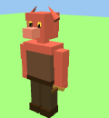 | Kobold | 13 | 22 | 3 | – | Gnómváros | Rúna 20%, Csont 40% + csont, érme; 8+ szint: ritka tábla 1/48 |
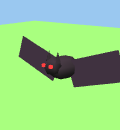 | Óriásdenevér | 14 | 20 | 3 | 10 | Dzsungelvár | Denevérszárny 50%, Toll 20% + csont, érme; 8+ szint: ritka tábla 1/48 |
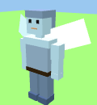 | Ködmanó | 15 | 24 | 3 | – | Felhőfok | Felhőesszencia 40%, Rúna 20% + csont, érme; 8+ szint: ritka tábla 1/48 |
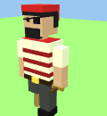 | Kalóz | 15 | 25 | 4 | – | Koponya-öböl | Rum 30%, Rúna 30%, Rumos hordó 25% + csont, érme; 8+ szint: ritka tábla 1/48 |
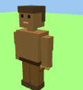 | Majomharcos | 16 | 26 | 4 | 5 | Dzsungelvár | Banán 50%, Gyöngy 5% + csont, érme; 8+ szint: ritka tábla 1/48 |
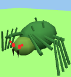 | Erdei pók | 16 | 26 | 4 | – | Tündeerdő | Pókselyem 50%, Póktojás 30% + csont, érme; 8+ szint: ritka tábla 1/48 |
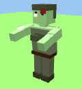 | Zombi | 18 | 34 | 4 | – | Holtláp | Csont 80%, Rongy 30% + csont, érme; 8+ szint: ritka tábla 1/48 |
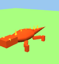 | Lávagyík | 18 | 30 | 5 | – | Barlang | Lávakő 15%, Kígyóbőr 40% + csont, érme; 8+ szint: ritka tábla 1/48 |
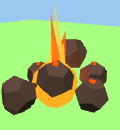 | Lávaszellem boss | 18 | 45 | 5 | – | Karamja | Lávakő 25% + csont, érme; 8+ szint: ritka tábla 1/48 |
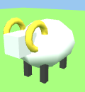 | Égi kos békés | 20 | 36 | 4 | – | Felhőfok | Gyapjú 60%, Aranyszarv 8% + csont, érme; 8+ szint: ritka tábla 1/48 |
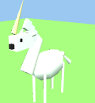 | Unikornis békés | 20 | 40 | 5 | – | Smaragd-völgy | Unikornisszarv 50% + csont, érme; 8+ szint: ritka tábla 1/48 |
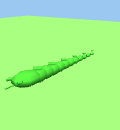 | Mérgeskígyó mérgez | 20 | 28 | 4 | 15 | Dzsungelvár | Kígyóméreg 35%, Kígyóbőr 40%, Gyógyfű 15% + csont, érme; 8+ szint: ritka tábla 1/48 |
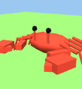 | Óriásrák | 20 | 35 | 5 | – | Koponya-öböl | Gyöngy 20%, Nyers garnéla 50% + csont, érme; 8+ szint: ritka tábla 1/48 |
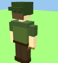 | Erdei bandita | 22 | 36 | 5 | – | Smaragd-völgy | Nyíl 40%, Tölgyrönk 30% + csont, érme; 8+ szint: ritka tábla 1/48 |
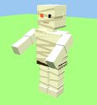 | Múmia | 22 | 40 | 5 | – | Homokfok | Gyolcs 50%, Ősi tekercs 40%, Rúna 30% + csont, érme; 8+ szint: ritka tábla 1/48 |
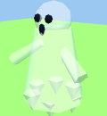 | Kísértet | 24 | 40 | 5 | – | Holtláp | Ektoplazma 50% + csont, érme; 8+ szint: ritka tábla 1/48 |
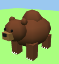 | Medve | 25 | 52 | 6 | – | Smaragd-völgy | Medvebőr 50%, Nyers hús 50% + csont, érme; 8+ szint: ritka tábla 1/48 |
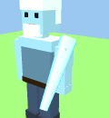 | Jégóriás boss | 25 | 60 | 7 | – | Zúzmara-fok | Jégkristály 50% + csont, érme; 8+ szint: ritka tábla 1/48 |
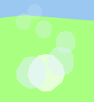 | Szélszellem | 26 | 42 | 5 | – | Felhőfok | Felhőesszencia 50% + csont, érme; 8+ szint: ritka tábla 1/48 |
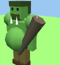 | Dzsungeltroll | 26 | 55 | 6 | 20 | Dzsungelvár | Trollfog 40%, Nagy csont 35%, Aranyrúd 12% + csont, érme; 8+ szint: ritka tábla 1/48 |
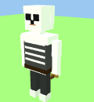 | Csontvázharcos | 28 | 48 | 6 | – | Holtláp | Nagy csont 50%, Csont 50% + csont, érme; 8+ szint: ritka tábla 1/48 |
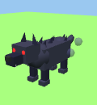 | Árnyfarkas | 28 | 45 | 6 | – | Tündeerdő | Farkasbőr 40%, Rúna 20% + csont, érme; 8+ szint: ritka tábla 1/48 |
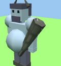 | Hegyi troll | 30 | 58 | 7 | – | Zúzmara-fok | Nagy csont 50%, Jégkristály 15% + csont, érme; 8+ szint: ritka tábla 1/48 |
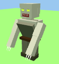 | Ghoul | 32 | 62 | 7 | 30 | Holtláp | Nagy csont 50%, Rongy 30% + csont, érme; 8+ szint: ritka tábla 1/48 |
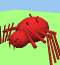 | Vérpók mérgez | 32 | 60 | 7 | 30 | Dzsungelvár | Pókselyem 50%, Kígyóméreg 25%, Rúna 20% + csont, érme; 8+ szint: ritka tábla 1/48 |
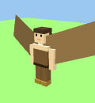 | Hárpia | 34 | 60 | 7 | 30 | Felhőfok | Hárpiatoll 60%, Csont 30% + csont, érme; 8+ szint: ritka tábla 1/48 |
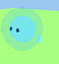 | Lidércfény | 36 | 50 | 8 | 35 | Holtláp | Rúna 50%, Lidércpor 40% + csont, érme; 8+ szint: ritka tábla 1/48 |
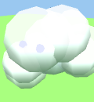 | Felhőelementál | 38 | 85 | 8 | 35 | Felhőfok | Felhőesszencia 80%, Rúna 30% + csont, érme; 8+ szint: ritka tábla 1/48 |
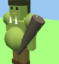 | Ogre | 38 | 90 | 8 | – | Gnómváros | Nagy csont 60%, Aranyrúd 10%, Len 30% + csont, érme; 8+ szint: ritka tábla 1/48 |
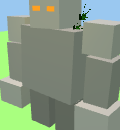 | Kőgólem | 40 | 110 | 8 | 40 | Dzsungelvár | Gólemszív 35%, Rúnaesszencia 40%, Rúna 15%, Aranyrúd 10% + csont, érme; 8+ szint: ritka tábla 1/48 |
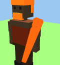 | Vulkánkirály boss | 40 | 150 | 9 | – | Barlang | Vulkánkard 30%, Lávakő 50% + csont, érme; 8+ szint: ritka tábla 1/48 |
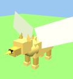 | Griff | 42 | 100 | 9 | 40 | Felhőfok | Griffkarom 50%, Nagy csont 40% + csont, érme; 8+ szint: ritka tábla 1/48 |
| Mohaóriás | 42 | 120 | 9 | 25 | Smaragd-völgy | Nagy csont 60%, Mohakristály 20%, Gyógyfű 30% + csont, érme; 8+ szint: ritka tábla 1/48 | |
| Vérfarkas | 45 | 110 | 10 | 50 | Holtláp | Vérfarkasbőr 40%, Nagy csont 50% + csont, érme; 8+ szint: ritka tábla 1/48 | |
| Kalózkapitány Szakáll boss | 45 | 180 | 10 | – | Koponya-öböl | Kapitánykard 25%, Rúna 60% + csont, érme; 8+ szint: ritka tábla 1/48 | |
| Árnylovag | 50 | 140 | 10 | 55 | Dzsungelvár | Nagy csont 50%, Sárkánykard 2% + csont, érme; 8+ szint: ritka tábla 1/48 | |
| Fáraó múmiája boss | 50 | 220 | 11 | – | aréna / különleges | Fáraó botja 25%, Skarabeusz 20%, Rúna 60% + csont, érme; 8+ szint: ritka tábla 1/48 | |
| Viharsárkány | 52 | 140 | 11 | 50 | Felhőfok | Viharpikkely 50%, Sárkánycsont 50%, Rúna 40% + csont, érme; 8+ szint: ritka tábla 1/48 | |
| Erdőőrző boss | 55 | 260 | 12 | – | Tündeerdő | Ősfa bot 25%, Tündeköpeny 20%, Gyógyfű 80% + csont, érme; 8+ szint: ritka tábla 1/48 | |
| Zöld sárkány boss | 62 | 300 | 14 | – | Smaragd-völgy | Sárkánycsont 90%, Zöld sárkánybőr 50%, Sárkánykard 4% + csont, érme; 8+ szint: ritka tábla 1/48 | |
| Várúr Morlak boss | 68 | 340 | 13 | 60 | Dzsungelvár | Sárkánykard 6%, Aranyrúd 50% + csont, érme; 8+ szint: ritka tábla 1/48 | |
| Vámpír úr Drakmor boss | 72 | 380 | 15 | 65 | Holtláp | Vámpírfog 80%, Sárkánykard 5%, Aranyrúd 60% + csont, érme; 8+ szint: ritka tábla 1/48 | |
| Viharkígyó Zephyra boss | 76 | 420 | 16 | 60 | Felhőfok | Viharpikkely 90%, Sárkánycsont 80%, Sárkánykard 6%, Aranyrúd 60% + csont, érme; 8+ szint: ritka tábla 1/48 |
Ritka drop-tábla
Minden 8+ szintű szörny 1/48 eséllyel (szerencseitallal 3/48) innen is dob: Rúna ×30, Aranyrúd ×3, Gyógyital ×5, Nagy csont ×6, Imaital ×3, Jégkristály ×3, Lávakő ×2, Kincses tekercs, 400 érme, Sárkánykard. Bossoknál 20% az esély. Minden boss 1/35 eséllyel a saját kicsinyített petjét adja.